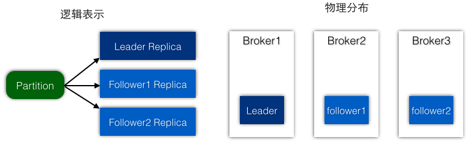
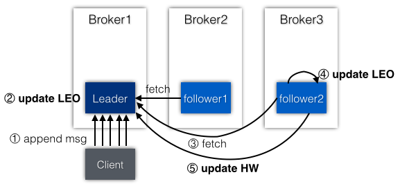

ISR
Partition & Replica
首先来看Partition的 Replication副本是个什么概念. 每个Partition都可以有多个 Replication. 其中Leader副本负责读写, Follower副本负责从 Leader拉取数据. Replica分布在不同的 Broker上. 所以Replica只需要两个属性: Partition(分区), brokerid(所在的 Kafka节点).

一个Replication有两个重要的元数据: HighWatermark和 LogEndOffset.
- HighWatermark是用来确保消费者能获取到的消息的最高水位,超过这个水位的消息是不会被客户端看到的.
- 由于Leader负责读写,所以HW只能由 Leader更新,但是怎么时候更新,可能由follower在更新 LEO时通知 Leader修改.
- LogEndOffset是所有的 Replica都会有的: Leader在消息追加后会更新,follower在从 Leader抓取消息也也会更新.

问: 最后一个可选的Log是怎么用来判断是否是本地的 Replica? Local和 Remote又是针对什么而言? 答:一个Partition的所有 Replicas都是保存在 Leader节点的内存中的. 而不是让每个节点自己管理自己的信息, 如果这样的话,每个Kafka节点的信息就都是不一样的! 而分布式集群管理是要有一个中心来管理所有节点信息的. 因为现在是在Leader节点上,并且是由Leader管理所有的 Replicas,Leader自己就是 Local,其他 Replics都是 Remote! 即Leader Replica = Local Replica, Follower Repicas = Remote Replicas.
问: 因为Partitions是分布在不同的 Kafka节点,本身每个节点记录的Partitions就是不一样的了. 答: 没错,分布式节点保存的信息是不一样的,但是同一个Partition的所有 Replicas应该是交给 Leader管理的. 而follower上的 Replicas并不需要管理自己的状态,因为Leader替他们管理好了.
class Replica(val brokerId: Int, val partition: Partition, time: Time = SystemTime, initialHighWatermarkValue: Long = 0L, val log: Option[Log] = None) {
// the high watermark offset value, in non-leader replicas only its message offsets are kept
@volatile private[this] var highWatermarkMetadata: LogOffsetMetadata = new LogOffsetMetadata(initialHighWatermarkValue)
// the log end offset value, kept in all replicas;
// for local replica it is the log's end offset, for remote replicas its value is only updated by follower fetch
@volatile private[this] var logEndOffsetMetadata: LogOffsetMetadata = LogOffsetMetadata.UnknownOffsetMetadata
def isLocal: Boolean = log match {
case Some(l) => true // 创建Replica时指定 Log时, 则表示是本地的Replication
case None => false
}
// 设置LEO: 不应该在Local Replication的 Partition上设置 LEO. 对于Local Replica,它是由Log的 EndOffset指定,而不能调用改update方法
private def logEndOffset_=(newLogEndOffset: LogOffsetMetadata) {
if (!isLocal) logEndOffsetMetadata = newLogEndOffset
}
// 获取LEO
def logEndOffset = if (isLocal) log.get.logEndOffsetMetadata else logEndOffsetMetadata
// 设置HW: 不应该在非Local Replication的 Partition上设置 HW, 即只能在Local Replica上设置, Local Replica也是 Leader Replica
def highWatermark_=(newHighWatermark: LogOffsetMetadata) {
if (isLocal) highWatermarkMetadata = newHighWatermark
}
// 获取HW
def highWatermark = highWatermarkMetadata
}
在Partition中创建 Replica,如果不在assignedReplicaMap中,根据是否是本地(Leader)来创建Replica实例. Local的 Replica比 Remote的多了 offset和 Log. Replica的 isLocal()会根据是否有 Log判断是不是 Local.
def getOrCreateReplica(replicaId: Int = localBrokerId): Replica = {
val replicaOpt = getReplica(replicaId)
replicaOpt match {
case Some(replica) => replica
case None =>
if (isReplicaLocal(replicaId)) {
val config = LogConfig.fromProps(logManager.defaultConfig.originals, AdminUtils.fetchEntityConfig(zkUtils, ConfigType.Topic, topic))
// TopicAndPartition的 Log
val log = logManager.createLog(TopicAndPartition(topic, partitionId), config)
// log.dirs是所有 TopicAndPartition的父目录, 而checkpoints也是全局的
val checkpoint = replicaManager.highWatermarkCheckpoints(log.dir.getParentFile.getAbsolutePath)
val offsetMap = checkpoint.read
// checkpoints中记录了所有 Partition的 offset信息, 所以可以根据TopicAndPartition找到对应的 offset
if (!offsetMap.contains(TopicAndPartition(topic, partitionId))) info("No checkpointed highwatermark is found for partition [%s,%d]".format(topic, partitionId))
val offset = offsetMap.getOrElse(TopicAndPartition(topic, partitionId), 0L).min(log.logEndOffset)
// 本地的是Leader, 所以要给出offset和 Log.
val localReplica = new Replica(replicaId, this, time, offset, Some(log))
addReplicaIfNotExists(localReplica)
} else {
// 远程的是follower.
val remoteReplica = new Replica(replicaId, this, time)
addReplicaIfNotExists(remoteReplica)
}
getReplica(replicaId).get
}
}
注意上面的log.dir是 TopicAndPartition的目录(每个TopicAndPartition目录是唯一的).
log.dir.getParentFile指的是配置文件中的 log.dirs,而不是Partition的目录.
而log.dirs是 server.properties的 log.dirs配置项,它是所有TopicAndPartition的父目录.
getOrCreateReplica被调用的地方是在 ReplicaManager.becomeLeaderOrFollower->makeFollowers
ReplicaManager->OffsetCheckpoint
Local Replica的 offset来源于 High watermark的 checkpoint(因为HW很重要,所有需要做检查点). ReplicaManager的 highWatermarkCheckpoints是一个 Map:日志目录(log.dirs)->OffsetCheckpoint.
val highWatermarkCheckpoints = config.logDirs.map(dir =>
(new File(dir).getAbsolutePath, new OffsetCheckpoint(new File(dir, ReplicaManager.HighWatermarkFilename)))
).toMap
下面的/data/kafka目录是 server.properties中的 log.dirs的配置项,会在这个目录下生成checkpoint文件.
➜ kafka ll ⬅️ log.dirs目录
-rw-r--r-- 1 zhengqh staff 0B 1 14 16:13 recovery-point-offset-checkpoint
-rw-r--r-- 1 zhengqh staff 18B 1 14 16:13 replication-offset-checkpoint ⬅️ offset-checkpoint文件
drwxr-xr-x 4 zhengqh staff 136B 1 14 16:13 wikipedia-0
➜ kafka ll wikipedia-0 ⬅️ topic-partition目录
-rw-r--r-- 1 zhengqh staff 10M 1 14 16:13 00000000000000000000.index ⬅️ Segment日志文件和索引文件
-rw-r--r-- 1 zhengqh staff 0B 1 14 16:13 00000000000000000000.log
ReplicaManager是管理所有的 Partition的,而checkpoints里记录的 offsetMap是所有 Partition共用的. 所以可以根据某个特定的TopicAndPartition找到它在 checkpoints中对应的 offset,用来创建Replica.
因为OffsetCheckpoint记录的是 TopicAndPartition到 offset的映射关系.所以这个类中只是文件的读写操作.
class OffsetCheckpoint(val file: File) extends Logging {
def write(offsets: Map[TopicAndPartition, Long]) {
// write the current version and the number of entries, then the entries, finally flush to disk
offsets.foreach { case (topicPart, offset) =>
writer.write("%s %d %d".format(topicPart.topic, topicPart.partition, offset))
writer.newLine()
}
}
def read(): Map[TopicAndPartition, Long] = {
var offsets = Map[TopicAndPartition, Long]()
line = reader.readLine()
while(line != null) {
val pieces = line.split("\\s+")
val topic = pieces(0)
val partition = pieces(1).toInt
val offset = pieces(2).toLong
offsets += (TopicAndPartition(topic, partition) -> offset)
line = reader.readLine()
}
}
}
ReplicaManager是在 becomeLeaderOrFollower调度 Checkpoint的写入,这个线程是定时运行的,确保HW是最新的.
private val highWatermarkCheckPointThreadStarted = new AtomicBoolean(false) // 原子变量,确保只有一个线程刷写checkpoint文件
private val allPartitions = new Pool[(String, Int), Partition] // 所有的Partitions
def startHighWaterMarksCheckPointThread() = {
if(highWatermarkCheckPointThreadStarted.compareAndSet(false, true))
scheduler.schedule("highwatermark-checkpoint", checkpointHighWatermarks, period = config.replicaHighWatermarkCheckpointIntervalMs, unit = TimeUnit.MILLISECONDS)
}
// Flushes the highwatermark value for all partitions to the highwatermark file 把所有Partitions的HW值刷写到文件中
def checkpointHighWatermarks() {
val replicas = allPartitions.values.map(_.getReplica(config.brokerId)).collect{case Some(replica) => replica}
val replicasByDir = replicas.filter(_.log.isDefined).groupBy(_.log.get.dir.getParentFile.getAbsolutePath)
for((dir, reps) <- replicasByDir) {
val hwms = reps.map(r => (new TopicAndPartition(r) -> r.highWatermark.messageOffset)).toMap
highWatermarkCheckpoints(dir).write(hwms)
}
}
如何根据Partition得到 offset: Partition->Replica->LogOffsetMetadata->messageOffset.
- 找出所有的Partitions,获取其Replica,确保有Replica的 Partition
- 根据log.dirs重新分组(确保有Log), 每个log.dirs对应了 replicas列表
- 对每个log.dirs, 循环replicas, 转换成TopicAndPartition到HW的映射
- 最终往每个log.dirs写入了属于这个 dir的 TopicAndPartition->offset信息
问: HW是由 Leader更新的,Broker节点存储的并不都是 Leader Partitions,在做checkpoint时是只对 Leader Partition做吗? 答: 不是的,ReplicaManager是对所有 Partitions做 checkpoint的.虽然只有 Leader更新 HW,但是Leader也会将 HW广播给 follower的. 当follower向 leader fetch request的时候,leader会把 hw也传给 follower,这样follower也有了 hw信息. 这样同一个Partition的 所有Replica都有了 hw信息.目的是即使Leader挂掉了,这个hw仍然会保留在其他 Replica上,其他replica成为 leader后,hw也不会丢失.
问: Replica的 highWatermark_=方法不是只有Leader才能调用吗(isLocal),那么leader广播给 follower的 hw是如何被更新的?
ReplicaManager.allPartitions
allPartitions被放入也是在 becomeLeaderOrFollower中.这说明一个Partition在 Leader和 follower转换时是要做很多工作的.
def getOrCreatePartition(topic: String, partitionId: Int): Partition = {
var partition = allPartitions.get((topic, partitionId))
if (partition == null) {
allPartitions.putIfNotExists((topic, partitionId), new Partition(topic, partitionId, time, this))
partition = allPartitions.get((topic, partitionId))
}
partition
}
allPartitions记录的是当前节点的所有 Partitions.这些 Partitions并不都是 Leader.
private def getLeaderPartitions() : List[Partition] = {
allPartitions.values.filter(_.leaderReplicaIfLocal().isDefined).toList
}
private def maybeShrinkIsr() {
allPartitions.values.foreach(_.maybeShrinkIsr(config.replicaLagTimeMaxMs)) //评估ISR,查看是否有replicas可以从中移除
}
留个坑: becomeLeaderOrFollower的调用以及 ISR收缩时对 HW的影响.
ReplicaManager.appendMessages
在Log.append之后,需要通知follower获取这些新的消息.因为现在 Leader的 LEO已经更新了,follower需要及时获取落后的消息 如果Partition的 ISR只有1个,说明没有其他Replication,则Leader的 LEO更新后,其HW也要也要一起更新(当然这是特殊情况)
为了更方便地查看在append之后的操作,我把相关的代码都列在一起了.之前分析过的就省略了.
//*****ReplicationManager.scala*****
private def appendToLocalLog(internalTopicsAllowed: Boolean,messagesPerPartition: Map[TopicAndPartition, MessageSet], requiredAcks: Short): Map[TopicAndPartition, LogAppendResult] = {
messagesPerPartition.map { case (topicAndPartition, messages) =>
val info = partition.appendMessagesToLeader(messages.asInstanceOf[ByteBufferMessageSet], requiredAcks)
(topicAndPartition, LogAppendResult(info))
}
}
//*****Partition.scala*****
def appendMessagesToLeader(messages: ByteBufferMessageSet, requiredAcks: Int = 0) = {
val (info, leaderHWIncremented) = inReadLock(leaderIsrUpdateLock) {
// ① 写到Partition的 Leader的那个 Log
val log = leaderReplica.log.get
val info = log.append(messages, assignOffsets = true)
// ② probably unblock some follower fetch requests since log end offset has been updated
replicaManager.tryCompleteDelayedFetch(new TopicPartitionOperationKey(this.topic, this.partitionId))
// ③ we may need to increment high watermark since ISR could be down to 1
(info, maybeIncrementLeaderHW(leaderReplica))
}
// some delayed operations may be unblocked after HW changed
// ④ 如果HW改变了,则一些延迟的请求(针对消费者)需要被解锁.当然如果HW没有变化,就不需要通知了
if (leaderHWIncremented) tryCompleteDelayedRequests()
}
//*****ReplicationManager.scala*****
def appendMessages(timeout: Long, ... ){
val localProduceResults = appendToLocalLog(internalTopicsAllowed, messagesPerPartition, requiredAcks)
val produceStatus = localProduceResults.map { case (topicAndPartition, result) =>
topicAndPartition -> ProducePartitionStatus(result.info.lastOffset + 1, ProducerResponseStatus(result.errorCode, result.info.firstOffset)) // required offset, response status
}
if (delayedRequestRequired(requiredAcks, messagesPerPartition, localProduceResults)) {
// ⑤ create delayed produce operation 创建延迟的Produce操作
val produceMetadata = ProduceMetadata(requiredAcks, produceStatus)
val delayedProduce = new DelayedProduce(timeout, produceMetadata, this, responseCallback)
// create a list of (topic, partition) pairs to use as keys for this delayed produce operation
val producerRequestKeys = messagesPerPartition.keys.map(new TopicPartitionOperationKey(_)).toSeq
// ⑥ try to complete the request immediately, otherwise put it into the purgatory 尝试立即完成请求,否则放入十八层地狱中炼狱一番(实际可以看做是缓存)
// this is because while the delayed produce operation is being created, new requests may arrive and hence make this operation completable.
delayedProducePurgatory.tryCompleteElseWatch(delayedProduce, producerRequestKeys)
} else {
// ⑦ we can respond immediately 如果不需要等待ISR同步数据,在成功写到Leader之后,就可以返回响应给Producer了
val produceResponseStatus = produceStatus.mapValues(status => status.responseStatus)
responseCallback(produceResponseStatus)
}
}
①-④ 添加到Leader的本地日志后,要解锁follower的 fetch,这样ISR中的 follower才能尽快地同步新增的消息. ⑤-⑥ 如果需要ISR中的 follower replicas同步数据,则需要创建延迟的ProducerRequest(生产请求),并交给专门的Purgatory处理 ⑦ 不需要等待ISR的数据同步,在成功写到Leader之后,就可以返回响应给Producer了
注意这里创建的DelayedProduce和 Producer相关的几个对象的关系.
- produceStatus: 生产者的状态, 主要是TopicAndPartition和 ProducePartitionStatus的映射. 会有多个Partition对应自己的状态
- produceMetadata: 包含了上面的生产者状态, 以及requiredAcks来自 Producer的 acks设置
- responseCallback: 回到函数, 来自于appendMessages外面传入的(来源于KafkaApis定义的回调函数<--客户端回调)
- produceResponseStatus: 最终返回给客户端的响应信息, 在请求完成时, 会把响应状态传给回调函数,然后调用回调函数,完成客户端的回调
ReplicaManager->DelayOperation
这里先简单看下生产请求需要被延迟的场景,后面一篇专门讲为什么需要延迟(以及使用缓存来保存和移除操作)
delayedRequestRequired
在appendToLocalLog后,满足下面的所有条件时,将会产生一个延迟的Produce请求,并且等待replication完成:
- required acks = -1 : Producer需要等待所有 ISR接收数据(这个最重要了,不过由客户端指定的)
- there is data to append : 有数据(废话,没数据怎么叫生产消息)
- at least one partition append was successful 至少一个Partition追加成功(一次请求有多个Partition)
private def delayedRequestRequired(requiredAcks: Short, messagesPerPartition: Map[TopicAndPartition, MessageSet], localProduceResults: Map[TopicAndPartition, LogAppendResult]): Boolean = {
requiredAcks == -1 && messagesPerPartition.size > 0 && localProduceResults.values.count(_.error.isDefined) < messagesPerPartition.size
}
DelayedProduce
localProduceResults -> (TopicAndPartition,LogAppendResult) -> ProducePartitionStatus -> ProduceMetadata -> DelayedProduce
本地(Leader)的生产结果 -> 日志追加结果 -> Produce的 Partition状态 -> Produce的元数据 -> 延迟的Produce操作
延迟的Produce操作会被 ReplicaManager创建(new DelayedProduce),并被ProduceOperationPurgatory监视.
// A delayed produce operation that can be created by the replica manager and watched in the produce operation purgatory
class DelayedProduce(delayMs: Long, produceMetadata: ProduceMetadata, replicaManager: ReplicaManager,
responseCallback: Map[TopicAndPartition, ProducerResponseStatus] => Unit) extends DelayedOperation(delayMs)
abstract class DelayedOperation(delayMs: Long) extends TimerTask with Logging {
override val expirationMs = delayMs + System.currentTimeMillis()
}
DelayedProduce的 delayMs以及 acks源头来自于 KafkaApis.handleProducerRequest的 ProduceRequest:
replicaManager.appendMessages(produceRequest.ackTimeoutMs.toLong, produceRequest.requiredAcks, internalTopicsAllowed, authorizedRequestInfo, sendResponseCallback)
DelayedOperationPurgatory
ReplicaManager的 append操作出现了三个 tryCompleteXXX(Fetch,Request,ElseWath)都是交给DelayedOperationPurgatory炼狱工厂.
class ReplicaManager:
val delayedProducePurgatory = new DelayedOperationPurgatory[DelayedProduce](purgatoryName = "Produce", config.brokerId, config.producerPurgatoryPurgeIntervalRequests)
val delayedFetchPurgatory = new DelayedOperationPurgatory[DelayedFetch](purgatoryName = "Fetch", config.brokerId, config.fetchPurgatoryPurgeIntervalRequests)
def tryCompleteDelayedFetch(key: DelayedOperationKey) { val completed = delayedFetchPurgatory.checkAndComplete(key) }
def tryCompleteDelayedProduce(key: DelayedOperationKey) { val completed = delayedProducePurgatory.checkAndComplete(key) }
// A helper purgatory class for bookkeeping delayed operations with a timeout, and expiring timed out operations.
class DelayedOperationPurgatory[T <: DelayedOperation](purgatoryName: String, brokerId: Int = 0, purgeInterval: Int = 1000)
A.尝试完成延迟的fetch请求的触发条件:
- A.1 Partition的 HW发生变化 (正常的fetch--即consumer的 fetch,因为HW是针对消费者而言,消费者最多只能到HW)
- A.2 新的MessageSet追加到本地日志 (follower的 fetch, 新的MessageSet有新的 LEO, 而follower是跟踪 LEO的)
B.尝试完成延迟的Produce请求的触发条件:
- B.1 Partition的 HW发生变化 (对于acks=-1的情况)
- B.2 收到了一个follower副本的 fetch操作 (对于acks>1的情况? acks不是只有-1,0,1三个值吗?)
Partition->IncrementLeaderHW
HW表示的是所有 ISR中的节点都已经复制完的消息.也是消费者所能获取到的消息的最大offset,所以叫做high watermark. 注意Leader Partition保存了 ISR信息.所以可以看到maybeIncrementLeaderHW()是在appendToLocalLog()内一起执行的
C.增加(Leader)Partition的 Hight Watermark(HW)的触发条件:
- C.1 (Leader)Partition的 ISR发生变化 (假设某个很慢的节点落后很多从ISR中移除,而其他节点大部分都catch-up,就可以更新HW)
- C.2 任何Replication的 LEO发生变化 (ISR中的 followers有任何一个节点 LEO改变,看看所有ISR是否都复制了,然后更新HW)
private def maybeIncrementLeaderHW(leaderReplica: Replica): Boolean = {
// 所有inSync副本中最小的 LEO(因为每个 follower的 LEO都可能不一样), 表示的是最新的hw
val allLogEndOffsets = inSyncReplicas.map(_.logEndOffset)
val newHighWatermark = allLogEndOffsets.min(new LogOffsetMetadata.OffsetOrdering)
// Leader本身的 hw, 是旧的
val oldHighWatermark = leaderReplica.highWatermark // 是一个LogOffsetMetadata
if(oldHighWatermark.precedes(newHighWatermark)) { // 比较Leader的 messageOffset是否小于 ISR的
leaderReplica.highWatermark = newHighWatermark // Leader小于 ISR, 更新Leader为 ISR中最小的
true
}else false // Returns true if the HW was incremented, and false otherwise.
}
在Log中 append的 updateLogEndOffset(LogAppendInfo.lastOffset+1)更新的是LogOffsetMetadata的 messageOffset 而这里的oldHighWatermark和 newHighWatermark也都是 LogOffsetMetadata(最重要的就是messageOffset字段了)! 所以实际比较的是两个LogOffsetMetadata的 messageOffset, 只有Leader的 HW小于 ISR最小的 LEO,才更新 Leader的 HW.
- leaderReplica是 Partition的 Leader副本,一个Partition只有一个 Leader,读写都发生在Leader上
- inSyncReplicas是 Partition的 follower中追赶上 Leader的副本(并不是所有 Follower都是 InSync)
这两个属性都是Partition级别的,即 Partition要知道它的 leader是哪个,以及这个leader管理的 isr列表是什么.
其他
delay operation complete
触发条件(延迟请求以及增加HW)中关于ISR的部分都是环环相扣的:
- leader有新消息写到本地日志(生产者写新数据) --> A.2 --> DelayedFetch
- leader replication的 LEO发生变化(追加了新消息) --> C.2 --> HW
- follower向 Leader发起 fetch请求(ISR的 follower会和 Leader保持同步) --> B.2 --> DelayedProduce
- follower所在 replication的 LEO发生变化(拉取了新消息到本地) --> C.2 --> HW
- 所有replication的 LEO发生变化,Leader的 HW也会变化(成功提交了消息) --> C.2 --> HW
- consumer读取至多 Leader的 HW,HW变化了,解锁consumer --> A.1 --> DelayedFetch
- producer等待 ISR都同步成功,导致HW变化,就可以返回响应 --> B.1 --> DelayedProduce
Partition and Replica Creation
ReplicaManager负责管理 Partition, 所以是在ReplicaManager创建 Partition的: getOrCreatePartition Partition负责管理 Replica, 所以是在Partition中创建 Replica的: getOrCreateReplica
ReplicaManager要管理 Broker上的所有 Partition, allPartitions: Pool[(String, Int), Partition] Partition也要管理分配的所有 Replica,还有Leader Replica和 ISR.
结语
- Partition副本由 Leader和 follower组成,只有ISR列表中的副本是仅仅跟着 Leader的
- Leader管理了 ISR列表,只有ISR列表中的所有副本都复制了消息,才能认为这条消息是提交的
- Leader和 follower副本都叫做 Replica,同一个 Partition的不同副本分布在不同 Broker上
- Replica很重要的两个信息是 HighWatermark(HW)和LogEndOffset(LEO)
- 只有Leader Partition负责客户端的读写,follower从 Leader同步数据
- 所有Replica都会对 HW做 checkpoint,Leader会在 follower的拉取请求时广播 HW给 follower